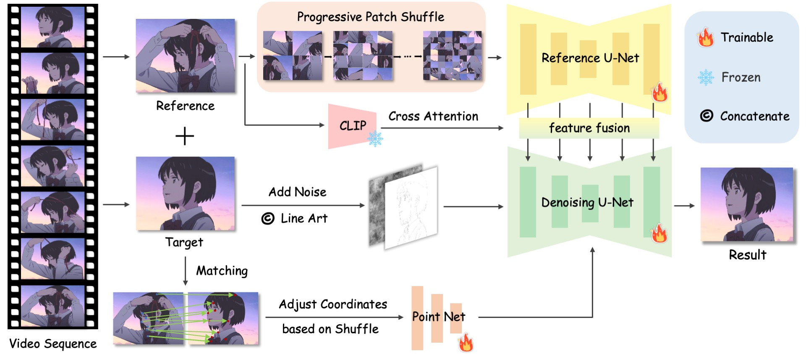
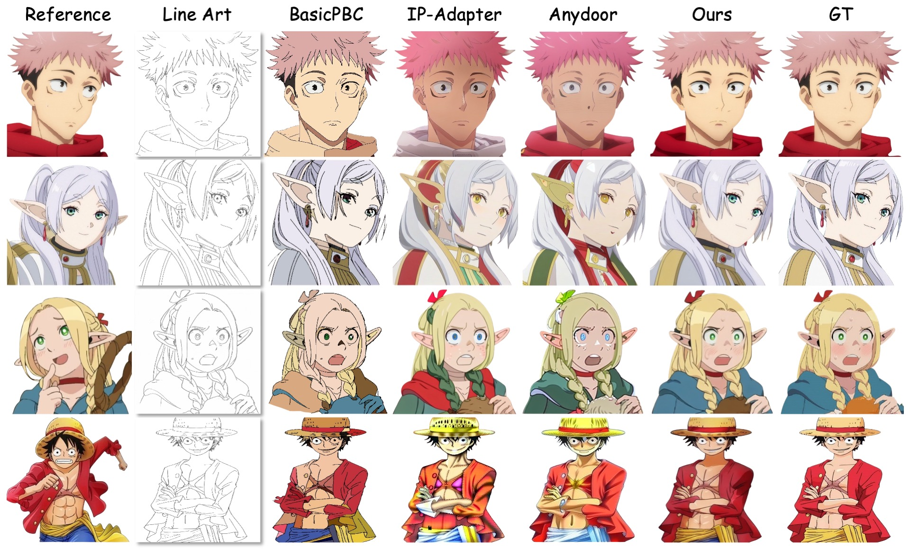
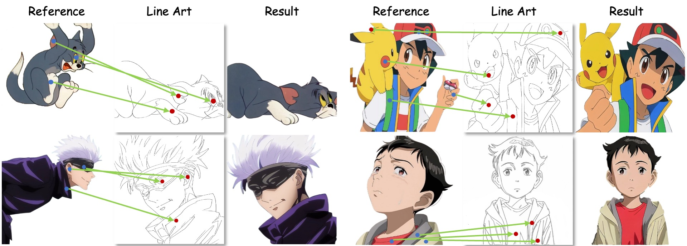
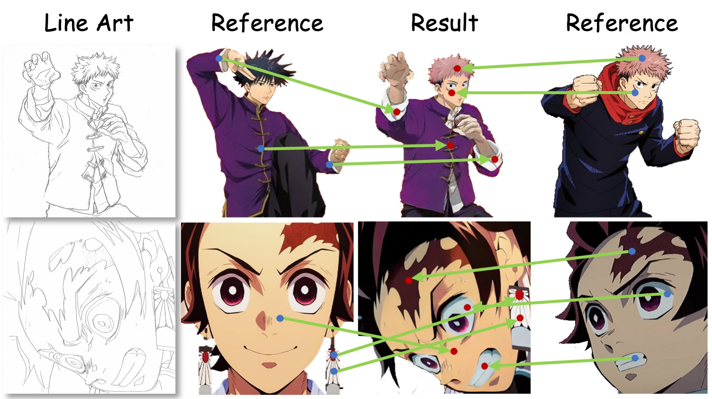
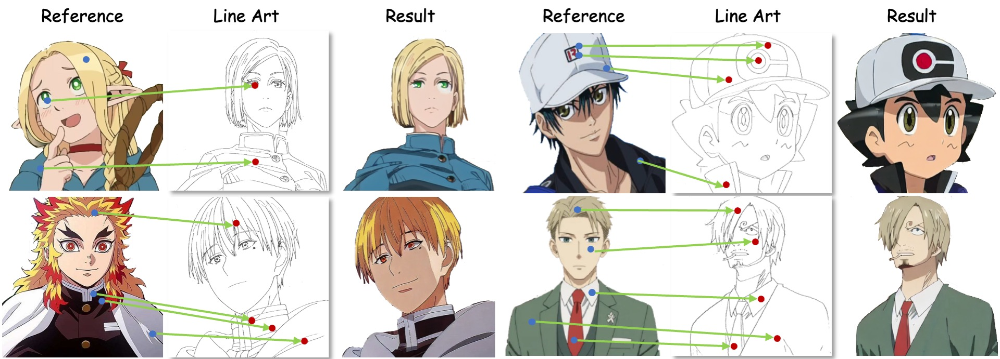

Derived from diffusion models, MangaNinja specializes in the task of reference-guided line art colorization. We incorporate two thoughtful designs to ensure precise character detail transcription, including a patch shuffling module to facilitate correspondence learning between the reference color image and the target line art, and a point-driven control scheme to enable fine-grained color matching. Experiments on a self-collected benchmark demonstrate the superiority of our model over current solutions in terms of precise colorization. We further showcase the potential of the proposed interactive point control in handling challenging cases (e.g., extreme poses and shadows), cross-character colorization, multi-reference harmonization, etc., beyond the reach of existing algorithms.
We randomly select two frames from video data, using one frame as a reference image and extracting the line art from the other. Both frames are input into the Reference U-Net and the Denoising U-Net, respectively. To enhance the model's automatic matching and fine-grained control capabilities, we propose a series of training strategies, including progressive patch shuffling. Additionally, we employ an off-the-shelf model to extract matching points from the two frames, and these point maps are fed into the main branch through PointNet.
We compare our method with the state-of-the-art non-generative colorization method BasicPBC, the consistency generation method IP-Adapter, and AnyDoor. The results demonstrate that our method significantly outperforms them in terms of colorization accuracy and generated image quality. Notably, our method does not use points for guidance in the generated results.
Visualization of varying poses or missing details. With point guidance, MangaNinja can tackle many challenging cases, especially when there are significant variations between the reference image and line art. When dealing with multiple objects, point guidance can also effectively prevent color confusion.
Visualization of multi-reference colorization. MangaNinja enables users to select specific areas from multiple reference images through points, providing guidance for all elements in the line art. Additionally, it effectively resolves conflicts between similar visual elements across the reference images.
Visualization of colorization with discrepant reference. MangaNinja uses points as guidance to achieve semantic color matching with fine control. We believe this interactive colorization with discrepant references can effectively assist users in their colorization attempts and inspire new ideas.
 @article{liu2025manganinja,
title={MangaNinja: Line Art Colorization with Precise Reference Following},
author={Liu, Zhiheng and Cheng, Ka Leong and Chen, Xi and Xiao, Jie and Ouyang, Hao and Zhu, Kai and Liu, Yu and Shen, Yujun and Chen, Qifeng and Luo, Ping},
journal={arXiv preprint arXiv:2501.08332},
year={2025}
}